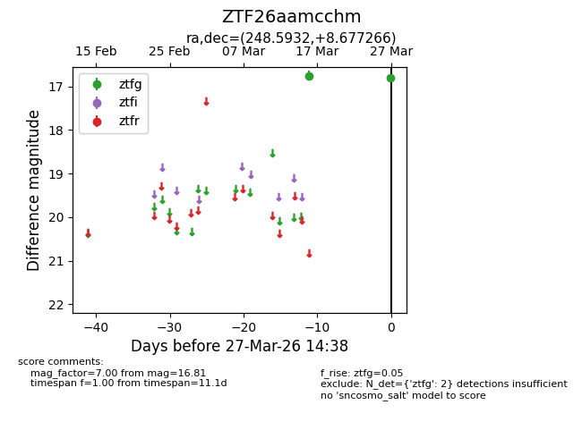
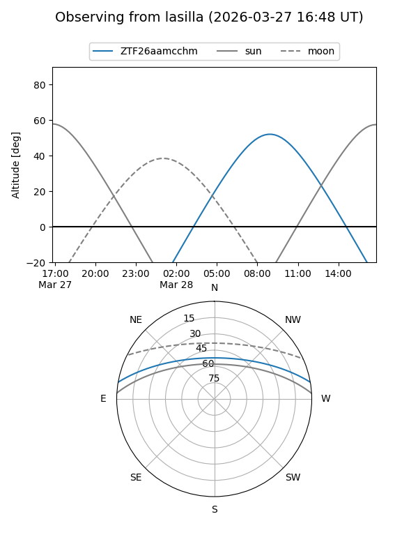
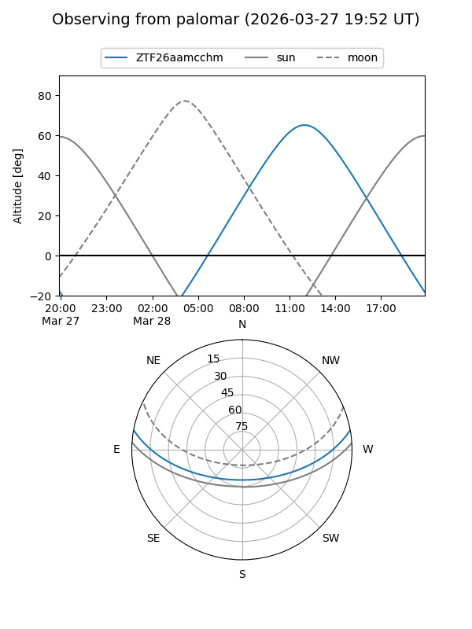

ZTF26aamcchm
Target ZTF26aamcchm at 2026-03-27 14:41
Aliases and brokers:
FINK: link
Lasair: link
ALeRCE: link
alt names
ZTF26aamcchm (ztf,fink_ztf)
Coordinates:
equatorial (ra, dec) = 248.5932,+8.67727
equatorial (HMS+DMS) = 16:34:22.37,+08:40:38.16
galactic (l, b) = (24.6083,+34.34372)
Flags:
Photometry:
last ztfg=16.81
2 ztfg detections
Lightcurve

Visibility


Additional plots